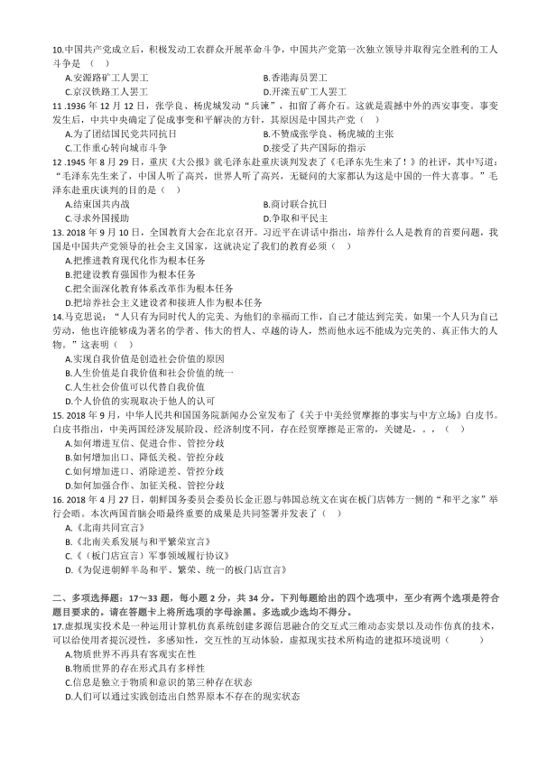
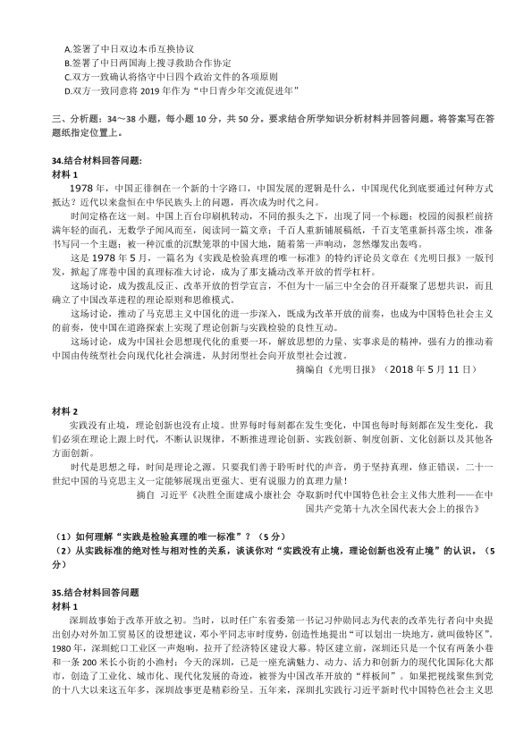
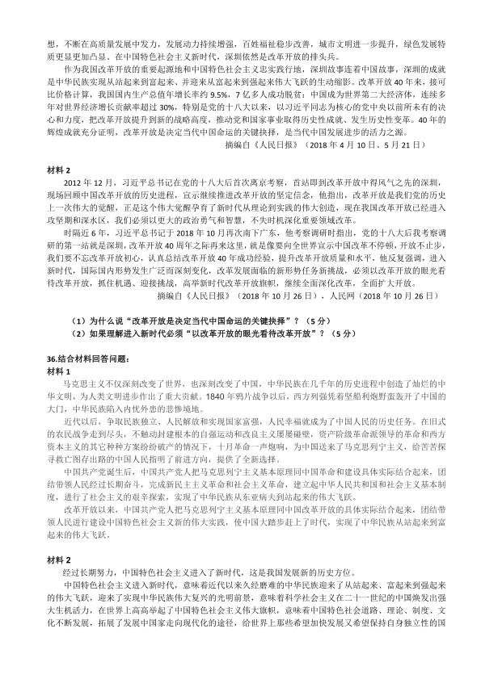
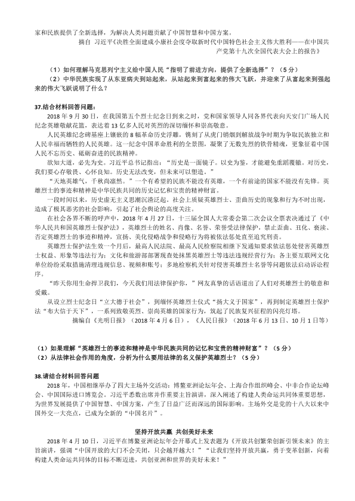

第 1 / 8 页

2019 年全国硕士研究生入学统一考试思想政治理论试题
一、单项选择题：1～16 小题，每小题1 分，共16 分。下列每题给出的四个选项中，只有一个选项是符合
题目要求的。请在答题卡上将所选项的字母涂黑。
1. 马克思、恩格斯始终站在革命斗争的最前沿，他们的一生是为推翻旧世界，建立新世界而不息战斗的一生。
马克思恩格斯领导创建的世界上第一个无产阶级政党是（
）
A.国际工人协会
B.正义者联盟
C.共产主义同盟
D.社会主义工人国际
2.“橘生淮南则为橘，生为淮北则为枳，叶徒相似，其实味不同。所以然者何？水土异也。”橘逾淮为枳说
明了（
）
A.事物的发展变化以时间地点和条件为转移
B.事物的普遍联系是通过中介来实现的
C.任何实体事物都是普遍联系之网上的一个网结D.事物的变化和发展是一个过程
3.马克思指出，判断一个变革时代不能以该时代的意识为依据，相反，这个意识必须从物质生活的矛盾中去
解释。这里的“物质生活的矛盾”从根本上说是（
）
A.社会生产力和生产关系的现存冲突
B.经济基础与上层建筑的现存冲突
C.人类社会与自然界的现存冲突
D.社会存在与社会意识的现存冲突
4.在以私有制经济为基础的商品经济中，商品生产者的私人劳动生产的产品是否与社会的需求相适应，作为
其体劳动的有用性质能否为社会所承认，商品的使用价值和价值之间的矛盾是否能得到解决，决定着商品生
产者的命运。以私有制为基础的商品经济的基本矛盾是（
）
A.使用价值和价值之间的矛盾
B.私人劳动和社会劳动之间的矛盾
C.具体劳动和抽象劳动的矛盾
D.脑力劳动和体力劳动的矛盾
5.习近平新时代中国特色社会主义思想是对马克思列宁主义、毛泽东思想、邓小平理论、“三个代表”重要
思想，科学发展观的继承和发展，是马克思主义中国化最新成果，是党和人民实践经验和集体智慧的结晶，
是中国特色社会主义理论体系的重要组成部分，是全党全国人民为实现中华民族伟大复兴而奋斗的行动指南。
这一思想的核心要以是（
）
A.坚持和发展中国特色社会主义
B.实现社会主义现代化
C.推进马克思主义中国化时代化大众化
D.坚持以经济建设为中心
6.党的十八大以来，为更好地适应我国国家安全面临的新形势新任务实现国家长治久安，我们党明确提出了
总体国家安全观。总体国家安全观的宗旨是（
）
A.政治安全
B.经济安全
C.人民安全
D.军事、文化、社会安全
7.高度重视和不断加强党的自身建设，是中国共产党从小到大、由弱变强，从挫折中奋起，在战胜困难中不
断成熟的一大法宝，也是党领导的伟大事业不断取得胜利的根本保证。中国特色社会主义进入新时代，党的
建设根本方针是（
）
A.全面加强党的执政本领
B.坚持党要管党、全面从严治党
C.坚持解放思想、改革创新
D.全面推进党的政治建设
8.党的十九大提出实施乡村振兴战略，是以习近平同志为核心的党中央着眼党和国家事业全局，深刻把握现
代化建设规律和城乡关系变化特征，顺应亿万农民对美好生活的向往，对“三农”工作作出的重大决策部署，
是新时代做好“三农”工作的总抓手。实施乡村振兴战略的根本目的是（
）
A.确保国家粮食安全
B.建立新型土地承包关系
C.转移农村剩余劳动力
D.推进农业农村现代化
9.由于民族危机越来越严重，在维新派的推动和策划下，1898 年6 月11 日，光绪皇帝颁布了“明定国是”
谕旨，宣布开始变法，并在此后的103 天中，接连发布了一系列推行新政的政令，史称“戊戌变法”，又称
“百日维新”。戊戌维新是一场资产阶级性质的改良运动，这是因为变法的政令，（
）
A.触及封建制度根本
B.采纳了维新派提出的开国会等政治主张
C.一定程度上反映了资产阶级的政治和经济诉求
D.带有彻底性和不妥协性
查看 / 复制本页文字
2019 年全国硕士研究生入学统一考试思想政治理论试题 一、单项选择题：1～16 小题，每小题1 分，共16 分。下列每题给出的四个选项中，只有一个选项是符合 题目要求的。请在答题卡上将所选项的字母涂黑。 1. 马克思、恩格斯始终站在革命斗争的最前沿，他们的一生是为推翻旧世界，建立新世界而不息战斗的一生。 马克思恩格斯领导创建的世界上第一个无产阶级政党是（ ） A.国际工人协会 B.正义者联盟 C.共产主义同盟 D.社会主义工人国际 2.“橘生淮南则为橘，生为淮北则为枳，叶徒相似，其实味不同。所以然者何？水土异也。”橘逾淮为枳说 明了（ ） A.事物的发展变化以时间地点和条件为转移 B.事物的普遍联系是通过中介来实现的 C.任何实体事物都是普遍联系之网上的一个网结D.事物的变化和发展是一个过程 3.马克思指出，判断一个变革时代不能以该时代的意识为依据，相反，这个意识必须从物质生活的矛盾中去 解释。这里的“物质生活的矛盾”从根本上说是（ ） A.社会生产力和生产关系的现存冲突 B.经济基础与上层建筑的现存冲突 C.人类社会与自然界的现存冲突 D.社会存在与社会意识的现存冲突 4.在以私有制经济为基础的商品经济中，商品生产者的私人劳动生产的产品是否与社会的需求相适应，作为 其体劳动的有用性质能否为社会所承认，商品的使用价值和价值之间的矛盾是否能得到解决，决定着商品生 产者的命运。以私有制为基础的商品经济的基本矛盾是（ ） A.使用价值和价值之间的矛盾 B.私人劳动和社会劳动之间的矛盾 C.具体劳动和抽象劳动的矛盾 D.脑力劳动和体力劳动的矛盾 5.习近平新时代中国特色社会主义思想是对马克思列宁主义、毛泽东思想、邓小平理论、“三个代表”重要 思想，科学发展观的继承和发展，是马克思主义中国化最新成果，是党和人民实践经验和集体智慧的结晶， 是中国特色社会主义理论体系的重要组成部分，是全党全国人民为实现中华民族伟大复兴而奋斗的行动指南。 这一思想的核心要以是（ ） A.坚持和发展中国特色社会主义 B.实现社会主义现代化 C.推进马克思主义中国化时代化大众化 D.坚持以经济建设为中心 6.党的十八大以来，为更好地适应我国国家安全面临的新形势新任务实现国家长治久安，我们党明确提出了 总体国家安全观。总体国家安全观的宗旨是（ ） A.政治安全 B.经济安全 C.人民安全 D.军事、文化、社会安全 7.高度重视和不断加强党的自身建设，是中国共产党从小到大、由弱变强，从挫折中奋起，在战胜困难中不 断成熟的一大法宝，也是党领导的伟大事业不断取得胜利的根本保证。中国特色社会主义进入新时代，党的 建设根本方针是（ ） A.全面加强党的执政本领 B.坚持党要管党、全面从严治党 C.坚持解放思想、改革创新 D.全面推进党的政治建设 8.党的十九大提出实施乡村振兴战略，是以习近平同志为核心的党中央着眼党和国家事业全局，深刻把握现 代化建设规律和城乡关系变化特征，顺应亿万农民对美好生活的向往，对“三农”工作作出的重大决策部署， 是新时代做好“三农”工作的总抓手。实施乡村振兴战略的根本目的是（ ） A.确保国家粮食安全 B.建立新型土地承包关系 C.转移农村剩余劳动力 D.推进农业农村现代化 9.由于民族危机越来越严重，在维新派的推动和策划下，1898 年6 月11 日，光绪皇帝颁布了“明定国是” 谕旨，宣布开始变法，并在此后的103 天中，接连发布了一系列推行新政的政令，史称“戊戌变法”，又称 “百日维新”。戊戌维新是一场资产阶级性质的改良运动，这是因为变法的政令，（ ） A.触及封建制度根本 B.采纳了维新派提出的开国会等政治主张 C.一定程度上反映了资产阶级的政治和经济诉求 D.带有彻底性和不妥协性
第 2 / 8 页

10.中国共产党成立后，积极发动工农群众开展革命斗争，中国共产党第一次独立领导并取得完全胜利的工人
斗争是（
）
A.安源路矿工人罢工
B.香港海员罢工
C.京汉铁路工人罢工
D.开滦五矿工人罢工
11 .1936 年12 月12 日，张学良、杨虎城发动“兵谏”，扣留了蒋介石。这就是震撼中外的西安事变。事变
发生后，中共中央确定了促成事变和平解决的方针，其原因是中国共产党（
）
A.为了团结国民党共同抗日
B.不赞成张学良、杨虎城的主张
C.工作重心转向城市斗争
D.接受了共产国际的指示
12 .1945 年8 月29 日，重庆《大公报》就毛泽东赴重庆谈判发表了《毛泽东先生来了！》的社评，其中写道：
“毛泽东先生来了，中国人听了高兴，世界人听了高兴，无疑问的大家都认为这是中国的一件大喜事。”毛
泽东赴重庆谈判的目的是（
）
A.结束国共内战
B.商讨联合抗日
C.寻求外国援助
D.争取和平民主
13. 2018 年9 月10 日，全国教育大会在北京召开。习近平在讲话中指出，培养什么人是教育的首要问题，我
国是中国共产党领导的社会主义国家，这就决定了我们的教育必须（
）
A.把推进教育现代化作为根本任务
B.把建设教育强国作为根本任务
C.把全面深化教育体系改革作为根本任务
D.把培养社会主义建设者和接班人作为根本任务
14.马克思说：“人只有为同时代人的完美、为他们的幸福而工作，自己才能达到完美。如果一个人只为自己
劳动，他也许能够成为著名的学者、伟大的哲人、卓越的诗人，然而他永远不能成为完美的、真正伟大的人
物。”这表明（
）
A.实现自我价值是创造社会价值的原因
B.人生价值是自我价值和社会价值的统一
C.人生社会价值可以代替自我价值
D.个人价值的实现取决于他人的认可
15. 2018 年9 月，中华人民共和国国务院新闻办公室发布了《关于中美经贸摩擦的事实与中方立场》白皮书。
白皮书指出，中美两国经济发展阶段、经济制度不同，存在经贸摩擦是正常的，关键是，。，（
）
A.如何增进互信、促进合作、管控分歧
B.如何增加出口、降低关税、管控分歧
C.如何增加进口、消除逆差、管控分歧
D.如何加强合作、加征关税、管控分歧
16. 2018 年4 月27 日，朝鲜国务委员会委员长金正恩与韩国总统文在寅在板门店韩方一侧的“和平之家”举
行会晤。本次两国首脑会晤最终重要的成果是共同签署并发表了（
）
A.《北南共同宣言》
B.《北南关系发展与和平繁荣宣言》
C.《（板门店宣言）军事领域履行协议》
D.《为促进朝鲜半岛和平、繁荣、统一的板门店宣言》
二、多项选择题：17～33 题，每小题2 分，共34 分。下列每题给出的四个选项中，至少有两个选项是符合
题目要求的。请在答题卡上将所选项的字母涂黑。多选或少选均不得分。
17.虚拟现实投术是一种运用计算机仿真系统创建多源信思融合的交互式三维动态实景以及动作仿真的技术，
可以给使用者提沉浸性，多感知性，交互性的互动体验，虚拟现实技术所构造的建拟环境说明（
）
A.物质世界不再具有客观实在性
B.物质世界的存在形式具有多样性
C.信息是独立于物质和意识的第三种存在状态
D.人们可以通过实践创造出自然界原本不存在的现实状态
查看 / 复制本页文字
10.中国共产党成立后，积极发动工农群众开展革命斗争，中国共产党第一次独立领导并取得完全胜利的工人 斗争是（ ） A.安源路矿工人罢工 B.香港海员罢工 C.京汉铁路工人罢工 D.开滦五矿工人罢工 11 .1936 年12 月12 日，张学良、杨虎城发动“兵谏”，扣留了蒋介石。这就是震撼中外的西安事变。事变 发生后，中共中央确定了促成事变和平解决的方针，其原因是中国共产党（ ） A.为了团结国民党共同抗日 B.不赞成张学良、杨虎城的主张 C.工作重心转向城市斗争 D.接受了共产国际的指示 12 .1945 年8 月29 日，重庆《大公报》就毛泽东赴重庆谈判发表了《毛泽东先生来了！》的社评，其中写道： “毛泽东先生来了，中国人听了高兴，世界人听了高兴，无疑问的大家都认为这是中国的一件大喜事。”毛 泽东赴重庆谈判的目的是（ ） A.结束国共内战 B.商讨联合抗日 C.寻求外国援助 D.争取和平民主 13. 2018 年9 月10 日，全国教育大会在北京召开。习近平在讲话中指出，培养什么人是教育的首要问题，我 国是中国共产党领导的社会主义国家，这就决定了我们的教育必须（ ） A.把推进教育现代化作为根本任务 B.把建设教育强国作为根本任务 C.把全面深化教育体系改革作为根本任务 D.把培养社会主义建设者和接班人作为根本任务 14.马克思说：“人只有为同时代人的完美、为他们的幸福而工作，自己才能达到完美。如果一个人只为自己 劳动，他也许能够成为著名的学者、伟大的哲人、卓越的诗人，然而他永远不能成为完美的、真正伟大的人 物。”这表明（ ） A.实现自我价值是创造社会价值的原因 B.人生价值是自我价值和社会价值的统一 C.人生社会价值可以代替自我价值 D.个人价值的实现取决于他人的认可 15. 2018 年9 月，中华人民共和国国务院新闻办公室发布了《关于中美经贸摩擦的事实与中方立场》白皮书。 白皮书指出，中美两国经济发展阶段、经济制度不同，存在经贸摩擦是正常的，关键是，。，（ ） A.如何增进互信、促进合作、管控分歧 B.如何增加出口、降低关税、管控分歧 C.如何增加进口、消除逆差、管控分歧 D.如何加强合作、加征关税、管控分歧 16. 2018 年4 月27 日，朝鲜国务委员会委员长金正恩与韩国总统文在寅在板门店韩方一侧的“和平之家”举 行会晤。本次两国首脑会晤最终重要的成果是共同签署并发表了（ ） A.《北南共同宣言》 B.《北南关系发展与和平繁荣宣言》 C.《（板门店宣言）军事领域履行协议》 D.《为促进朝鲜半岛和平、繁荣、统一的板门店宣言》 二、多项选择题：17～33 题，每小题2 分，共34 分。下列每题给出的四个选项中，至少有两个选项是符合 题目要求的。请在答题卡上将所选项的字母涂黑。多选或少选均不得分。 17.虚拟现实投术是一种运用计算机仿真系统创建多源信思融合的交互式三维动态实景以及动作仿真的技术， 可以给使用者提沉浸性，多感知性，交互性的互动体验，虚拟现实技术所构造的建拟环境说明（ ） A.物质世界不再具有客观实在性 B.物质世界的存在形式具有多样性 C.信息是独立于物质和意识的第三种存在状态 D.人们可以通过实践创造出自然界原本不存在的现实状态
第 3 / 8 页
18. 基因编辑是应对遗传性疾病的一种潜在治疗方法，但其技术运用极具争议，这不仅是因为基因的变化会
传给后代并最终有可能影响整个基因库，而且更重要的是基因编辑会产生长远而深刻的社会影响，可能衍生
出一系列棘手的伦理、法律和安全难题，正因如此，许多国家对人类基因编辑技术制定了相应的伦理、法律
规范。人类严格控制基因编辑行为的原因在于，，，（
）
A.人的实践活动要遵循真理尺度与价值尺度的统一
B.基因编辑技术可能突破人类的伦理道德底线
C.科学技术有时表现为异己的、敌对的力量
D.人的实践活动是合规律性与合目的性的统一
19.资本主义的生产目的是追逐利润最大化，为了获得尽可能多的利润，分布在不同部门（行业）的资本家之
间必然展开激烈的竞争，而竞争的结果必将导致利润的平均化。利润率的平均化的过程意味着（
）
A.某企业工人创造的剩余价值有被其他资本家侵占的可能
B.各部门内不同资本家的等量投资所得到的利润大体上均等
C.各部门资本家在加强对工人阶级的剥削上有着共同的阶级利益
D.不从事直接生产的银行资本家所获得的利润总是低于平均利润
20.资本主义必然为社会主义所替代，并不意味着资本主义将在短期内自行消亡。资本主义向社会主义的过渡
必然是一个复杂的、长期的历史过程，其原因在于（
）
A.任何社会形态的存在都有绝对引稳定性
B.资本主义的发展具有不平衡性
C.资本主义社会具有一定的自我调节能力
D.当代资本主义的发展还显示出生产关系对生产力容纳的空间
21.习近平指出：“当代中国的伟大社会变革，不是简单延续我国历史文化的母版，不是简单套用马克思主义
经典作家设想的模板，不是其他国家社会主义实践的再现，不是国外现代化发展的翻版，”这对我们的理解
科学社会主义一般原则的启示是（
）
A.科学社会主义绝不是一成不变的教条
B.科学社会主义与资本主义生产方式没有必然的联系
C.科学社会主义是人类优秀文化传统的历史延续
D.科学社会主义不在不同的时代具有不同的内容和形式
22.中国特色社会主义进入新时代，我国社会主要矛盾已经转化为人民日益增长的美好生活需要和不平衡不充
分的发展之间的矛盾。但是，我国社会主要矛盾的变化没有改变我们对我国社会主义所处历史阶段的判断，
依据是（
）
A.我国总体上仍处于不发达阶段
B.我国仍然面临极其复杂的国际环境
C.我国仍然是世界上最大的发展中国家
D.我国社会主要矛盾的变化只是社会主义初级阶段这个历史阶段中的变化
23. 改革开放40 年来，我国民营经济从小到大、从弱到强，不断发展壮大。截止2017 年底，我国民营企业
数量超过2700 万家，个体工商户超过6500 万户，注册资本超过165 万亿元。概括起来说，民营经济具有“五
六七八九”的特征，即贡献了50%以上的税收，60%以上的国内生产总值，70%以上的技术创新成果，80%以
上的城镇劳动力就业，90%以上的企业数量。我国经济发展能够创造中国奇迹，民营经济功不可没。这表明，
民营经济已成为（
）
A.实现中华民族伟大复兴中国梦的重要力量
B.推动社会主义市场经济发展的重要力量
C.建设现代化经济体系的重要主体
D.控制国民经济命脉的主导力量
24.国家治理体系是在党的领导下管理国家的制度体系，是一套紧密相连、相互协调的国家制度；国家治理能
力则是运用国家制度管理社会各方面事务的能力。二者的关系主要表现为（
）
A.国家治理体系和治理能力是相辅相成的有机整体
B.好的国家治理体系可以提高国家治理能力
查看 / 复制本页文字
18. 基因编辑是应对遗传性疾病的一种潜在治疗方法，但其技术运用极具争议，这不仅是因为基因的变化会 传给后代并最终有可能影响整个基因库，而且更重要的是基因编辑会产生长远而深刻的社会影响，可能衍生 出一系列棘手的伦理、法律和安全难题，正因如此，许多国家对人类基因编辑技术制定了相应的伦理、法律 规范。人类严格控制基因编辑行为的原因在于，，，（ ） A.人的实践活动要遵循真理尺度与价值尺度的统一 B.基因编辑技术可能突破人类的伦理道德底线 C.科学技术有时表现为异己的、敌对的力量 D.人的实践活动是合规律性与合目的性的统一 19.资本主义的生产目的是追逐利润最大化，为了获得尽可能多的利润，分布在不同部门（行业）的资本家之 间必然展开激烈的竞争，而竞争的结果必将导致利润的平均化。利润率的平均化的过程意味着（ ） A.某企业工人创造的剩余价值有被其他资本家侵占的可能 B.各部门内不同资本家的等量投资所得到的利润大体上均等 C.各部门资本家在加强对工人阶级的剥削上有着共同的阶级利益 D.不从事直接生产的银行资本家所获得的利润总是低于平均利润 20.资本主义必然为社会主义所替代，并不意味着资本主义将在短期内自行消亡。资本主义向社会主义的过渡 必然是一个复杂的、长期的历史过程，其原因在于（ ） A.任何社会形态的存在都有绝对引稳定性 B.资本主义的发展具有不平衡性 C.资本主义社会具有一定的自我调节能力 D.当代资本主义的发展还显示出生产关系对生产力容纳的空间 21.习近平指出：“当代中国的伟大社会变革，不是简单延续我国历史文化的母版，不是简单套用马克思主义 经典作家设想的模板，不是其他国家社会主义实践的再现，不是国外现代化发展的翻版，”这对我们的理解 科学社会主义一般原则的启示是（ ） A.科学社会主义绝不是一成不变的教条 B.科学社会主义与资本主义生产方式没有必然的联系 C.科学社会主义是人类优秀文化传统的历史延续 D.科学社会主义不在不同的时代具有不同的内容和形式 22.中国特色社会主义进入新时代，我国社会主要矛盾已经转化为人民日益增长的美好生活需要和不平衡不充 分的发展之间的矛盾。但是，我国社会主要矛盾的变化没有改变我们对我国社会主义所处历史阶段的判断， 依据是（ ） A.我国总体上仍处于不发达阶段 B.我国仍然面临极其复杂的国际环境 C.我国仍然是世界上最大的发展中国家 D.我国社会主要矛盾的变化只是社会主义初级阶段这个历史阶段中的变化 23. 改革开放40 年来，我国民营经济从小到大、从弱到强，不断发展壮大。截止2017 年底，我国民营企业 数量超过2700 万家，个体工商户超过6500 万户，注册资本超过165 万亿元。概括起来说，民营经济具有“五 六七八九”的特征，即贡献了50%以上的税收，60%以上的国内生产总值，70%以上的技术创新成果，80%以 上的城镇劳动力就业，90%以上的企业数量。我国经济发展能够创造中国奇迹，民营经济功不可没。这表明， 民营经济已成为（ ） A.实现中华民族伟大复兴中国梦的重要力量 B.推动社会主义市场经济发展的重要力量 C.建设现代化经济体系的重要主体 D.控制国民经济命脉的主导力量 24.国家治理体系是在党的领导下管理国家的制度体系，是一套紧密相连、相互协调的国家制度；国家治理能 力则是运用国家制度管理社会各方面事务的能力。二者的关系主要表现为（ ） A.国家治理体系和治理能力是相辅相成的有机整体 B.好的国家治理体系可以提高国家治理能力
第 4 / 8 页
C.提高国家治理能力可以充分发挥国家治理体系的效能
D.国家治理体系越完备国家治理能力就一定越强
25.全面准确的理解和把握“一国”与“两制”的关系，应在坚持“一国”的基础上，实现“两制”之间的和
谐相处、相互促进。为此，必须做到（
）
A.把利用国际有利条件和发挥港澳优势有机结合起来
B.把坚持“一国”原则和尊重“两制”差异有机结合起来
C.把维护中央权力和保障特别行政区高度自治权有机结合起来
D.把发挥祖国内地坚强后盾作用和提高港澳自身竞争力有机结合起来
26.坚定文化自信，是事关国运兴衰，事关文化安全、事关民族精神独立性的大问题。坚定中国特色社会主义
道路自信、理论自信、制度自信，说到底就是要坚定文化自信。讲文化自信，我们有充足的理由和充足底气，
因为中国特色社会主义文化（
）
A.源自于博大精深的中华优秀传统文化
B.承继于激昂向上的革命文化
C.熔铸于生机勃勃的社会主义先进文化
D.植根于中国特色社会主义伟大实践
27. 1927 年10 月，毛泽东率领湘赣边界秋收起义的工农革命军，开始创建以宁冈中心的井冈山农村革命根据
地，走农村包围城市、武装夺取政权的革命新道路。毛泽东确定在井冈山建立根据地，是因为这个地区（
）
A.有较好的群众基础
B.地势险要且易守难攻
C.易于部队筹款筹粮
D.敌人统治力量比较薄弱
28. 1949 年10 月1 日，首都军民30 万人齐集北京天安门广场，欢庆中华人民共和国的诞生。中华人民共和
国的成立，标志着，，，（
）
A.新民主主义革命取得了基本的胜利
B.半殖民地半封建社会的结束
C.中国共产党的地位发生了根本性的变化
D.社会主义基本制度的确立
29.我国经济体制的改革首先在农村取得突破性进展。党的十一届三中全会曾指出：“我国农业近二十年来的
发展速度不快，它同人民的需要和四个现代化的需要之间存在着及其尖锐的矛盾。”当时我国农业和农村经
济发展面临的主要问题有（
）
A.农民的温饱问题尚未完全解决
B.农民的农村的土地改革尚未完成
C.人民公社制度亟待改革
D.乡镇企业管理体制亟待改革
30. 2018 年3 月，十三届全国人民代表大会第一次会议通过宪法修正案，把国家倡导社会主义核心价值观正
式写入宪法，进一步凸显了社会主义核心价值观的重大意义。社会主义核心价值观是（
）
A.坚持和发展中国特色社会主义的价值遵循
B.提高国家文化软实力的迫切要求
C.增进社会团结和谐的最大公约数
D.构建人类命运共同体的行动指南
31.中国特色社会主义法治道路的一个鲜明特点，就是坚持依法治国和以德治国的结合。法治和德治，是治国
理政不可或缺的两种方式。这是因为法治和德治（
）
A.发挥作用方式不同
B.实现途径不同
C.所处地位不同
D.调整范围不同
32. 2018 年6 月22 日至23 日，中央外事工作会议在北京召开。习近平总书记在会上发表重要讲话，强调要
深入分析世界转型过渡期国际形势的演变规律，准确把握历史交汇期我国外部环境的基本特征，统筹谋划和
推进对外工作。其基本要求是（
）
A.既要把握世界多极化加速推进的大势，又要重视大国关系深入调查整的态势
B.既要把握经济全球化持续发展的大势，又要重视世界经济格局深刻演变的动向
C.既要把握国际环境总体稳定的大势，又要重重视国际安全挑战错综复杂的局面
D.既要把握各种文明交流互鉴的大势，又要重视不同思想文化相互激荡的现实
33.2018 年是中日和平友好条约缔结40 周年。日本首相安倍晋三于10 月25 日至27 日对中国进行正式访问。
习近平主席、李克强总理分别与其举行了会晤、会谈。中日双方就改善、发展两国关系及共同关心的国际和
地区问题交换了意见，在政治、经济、安全及其他国际问题上达成诸多共识，取得务实成果。这些成果主要
有（
）
查看 / 复制本页文字
C.提高国家治理能力可以充分发挥国家治理体系的效能 D.国家治理体系越完备国家治理能力就一定越强 25.全面准确的理解和把握“一国”与“两制”的关系，应在坚持“一国”的基础上，实现“两制”之间的和 谐相处、相互促进。为此，必须做到（ ） A.把利用国际有利条件和发挥港澳优势有机结合起来 B.把坚持“一国”原则和尊重“两制”差异有机结合起来 C.把维护中央权力和保障特别行政区高度自治权有机结合起来 D.把发挥祖国内地坚强后盾作用和提高港澳自身竞争力有机结合起来 26.坚定文化自信，是事关国运兴衰，事关文化安全、事关民族精神独立性的大问题。坚定中国特色社会主义 道路自信、理论自信、制度自信，说到底就是要坚定文化自信。讲文化自信，我们有充足的理由和充足底气， 因为中国特色社会主义文化（ ） A.源自于博大精深的中华优秀传统文化 B.承继于激昂向上的革命文化 C.熔铸于生机勃勃的社会主义先进文化 D.植根于中国特色社会主义伟大实践 27. 1927 年10 月，毛泽东率领湘赣边界秋收起义的工农革命军，开始创建以宁冈中心的井冈山农村革命根据 地，走农村包围城市、武装夺取政权的革命新道路。毛泽东确定在井冈山建立根据地，是因为这个地区（ ） A.有较好的群众基础 B.地势险要且易守难攻 C.易于部队筹款筹粮 D.敌人统治力量比较薄弱 28. 1949 年10 月1 日，首都军民30 万人齐集北京天安门广场，欢庆中华人民共和国的诞生。中华人民共和 国的成立，标志着，，，（ ） A.新民主主义革命取得了基本的胜利 B.半殖民地半封建社会的结束 C.中国共产党的地位发生了根本性的变化 D.社会主义基本制度的确立 29.我国经济体制的改革首先在农村取得突破性进展。党的十一届三中全会曾指出：“我国农业近二十年来的 发展速度不快，它同人民的需要和四个现代化的需要之间存在着及其尖锐的矛盾。”当时我国农业和农村经 济发展面临的主要问题有（ ） A.农民的温饱问题尚未完全解决 B.农民的农村的土地改革尚未完成 C.人民公社制度亟待改革 D.乡镇企业管理体制亟待改革 30. 2018 年3 月，十三届全国人民代表大会第一次会议通过宪法修正案，把国家倡导社会主义核心价值观正 式写入宪法，进一步凸显了社会主义核心价值观的重大意义。社会主义核心价值观是（ ） A.坚持和发展中国特色社会主义的价值遵循 B.提高国家文化软实力的迫切要求 C.增进社会团结和谐的最大公约数 D.构建人类命运共同体的行动指南 31.中国特色社会主义法治道路的一个鲜明特点，就是坚持依法治国和以德治国的结合。法治和德治，是治国 理政不可或缺的两种方式。这是因为法治和德治（ ） A.发挥作用方式不同 B.实现途径不同 C.所处地位不同 D.调整范围不同 32. 2018 年6 月22 日至23 日，中央外事工作会议在北京召开。习近平总书记在会上发表重要讲话，强调要 深入分析世界转型过渡期国际形势的演变规律，准确把握历史交汇期我国外部环境的基本特征，统筹谋划和 推进对外工作。其基本要求是（ ） A.既要把握世界多极化加速推进的大势，又要重视大国关系深入调查整的态势 B.既要把握经济全球化持续发展的大势，又要重视世界经济格局深刻演变的动向 C.既要把握国际环境总体稳定的大势，又要重重视国际安全挑战错综复杂的局面 D.既要把握各种文明交流互鉴的大势，又要重视不同思想文化相互激荡的现实 33.2018 年是中日和平友好条约缔结40 周年。日本首相安倍晋三于10 月25 日至27 日对中国进行正式访问。 习近平主席、李克强总理分别与其举行了会晤、会谈。中日双方就改善、发展两国关系及共同关心的国际和 地区问题交换了意见，在政治、经济、安全及其他国际问题上达成诸多共识，取得务实成果。这些成果主要 有（ ）
第 5 / 8 页

A.签署了中日双边本币互换协议
B.签署了中日两国海上搜寻救助合作协定
C.双方一致确认将恪守中日四个政治文件的各项原则
D.双方一致同意将2019 年作为“中日青少年交流促进年”
三、分析题：34～38 小题，每小题10 分，共50 分。要求结合所学知识分析材料并回答问题。将答案写在答
题纸指定位置上。
34.结合材料回答问题:
材料1
1978 年，中国正徘徊在一个新的十字路口，中国发展的逻辑是什么，中国现代化到底要通过何种方式
抵达？近代以来盘恒在中华民族头上的问题，再次成为时代之问。
时间定格在这一刻。中国上百台印刷机转动，不同的报头之下，出现了同一个标题；校园的阅报栏前挤
满年轻的面孔，无数学子闻风而至，阅读同一篇文章；千百人重新铺展稿纸，千百支笔重新抖落尘埃，准备
书写同一个主题；被一种沉重的沉默笼罩的中国大地，随着第一声响动，忽然爆发出轰鸣。
这是1978 年5 月，一篇名为《实践是检验真理的唯一标准》的特约评论员文章在《光明日报》一版刊
发，掀起了席卷中国的真理标准大讨论，成为了那支撬动改革开放的哲学杠杆。
这场讨论，成为拨乱反正、改革开放的哲学宣言，不但为十一届三中全会的召开凝聚了思想共识，而且
确立了中国改革进程的理论原则和思维模式。
这场讨论，推动了马克思主义中国化的进一步深入，既成为改革开放的前奏，也成为中国特色社会主义
的前奏，使中国在道路探索上实现了理论创新与实践检验的良性互动。
这场讨论，成为中国社会思想现代化的重要一环，解放思想的力量、实事求是的精神，强有力的推动着
中国由传统型社会向现代化社会演进，从封闭型社会向开放型社会过渡。
摘编自《光明日报》（2018 年5 月11 日）
材料2
实践没有止境，理论创新也没有止境。世界每时每刻都在发生变化，中国也每时每刻都在发生变化，我
们必须在理论上跟上时代，不断认识规律，不断推进理论创新、实践创新、制度创新、文化创新以及其他各
方面创新。
时代是思想之母，时间是理论之源。只要我们善于聆听时代的声音，勇于坚持真理，修正错误，二十一
世纪中国的马克思主义一定能够展现出更强大、更有说服力的真理力量！
摘自习近平《决胜全面建成小康社会夺取新时代中国特色社会主义伟大胜利——在中
国共产党第十九次全国代表大会上的报告》
（1）如何理解“实践是检验真理的唯一标准”？（5 分）
（2）从实践标准的绝对性与相对性的关系，谈谈你对“实践没有止境，理论创新也没有止境”的认识。（5
分）
35.结合材料回答问题
材料1
深圳故事始于改革开放之初。当时，以时任广东省委第一书记习仲勋同志为代表的改革先行者向中央提
出创办对外加工贸易区的设想建议，邓小平同志审时度势，创造性地提出“可以划出一块地方，就叫做特区”。
1980 年，深圳蛇口工业区一声炮响，拉开了经济特区建设大幕。特区建立前，深圳还只是一个仅有两条小巷
和一条200 米长小街的小渔村；今天的深圳，已是一座充满魅力、动力、活力和创新力的现代化国际化大都
市，创造了工业化、城市化、现代化发展的奇迹，被誉为中国改革开放的“样板间”。如果把视线聚焦到党
的十八大以来这五年多，深圳故事更是精彩纷呈。五年来，深圳扎实践行习近平新时代中国特色社会主义思
查看 / 复制本页文字
A.签署了中日双边本币互换协议 B.签署了中日两国海上搜寻救助合作协定 C.双方一致确认将恪守中日四个政治文件的各项原则 D.双方一致同意将2019 年作为“中日青少年交流促进年” 三、分析题：34～38 小题，每小题10 分，共50 分。要求结合所学知识分析材料并回答问题。将答案写在答 题纸指定位置上。 34.结合材料回答问题: 材料1 1978 年，中国正徘徊在一个新的十字路口，中国发展的逻辑是什么，中国现代化到底要通过何种方式 抵达？近代以来盘恒在中华民族头上的问题，再次成为时代之问。 时间定格在这一刻。中国上百台印刷机转动，不同的报头之下，出现了同一个标题；校园的阅报栏前挤 满年轻的面孔，无数学子闻风而至，阅读同一篇文章；千百人重新铺展稿纸，千百支笔重新抖落尘埃，准备 书写同一个主题；被一种沉重的沉默笼罩的中国大地，随着第一声响动，忽然爆发出轰鸣。 这是1978 年5 月，一篇名为《实践是检验真理的唯一标准》的特约评论员文章在《光明日报》一版刊 发，掀起了席卷中国的真理标准大讨论，成为了那支撬动改革开放的哲学杠杆。 这场讨论，成为拨乱反正、改革开放的哲学宣言，不但为十一届三中全会的召开凝聚了思想共识，而且 确立了中国改革进程的理论原则和思维模式。 这场讨论，推动了马克思主义中国化的进一步深入，既成为改革开放的前奏，也成为中国特色社会主义 的前奏，使中国在道路探索上实现了理论创新与实践检验的良性互动。 这场讨论，成为中国社会思想现代化的重要一环，解放思想的力量、实事求是的精神，强有力的推动着 中国由传统型社会向现代化社会演进，从封闭型社会向开放型社会过渡。 摘编自《光明日报》（2018 年5 月11 日） 材料2 实践没有止境，理论创新也没有止境。世界每时每刻都在发生变化，中国也每时每刻都在发生变化，我 们必须在理论上跟上时代，不断认识规律，不断推进理论创新、实践创新、制度创新、文化创新以及其他各 方面创新。 时代是思想之母，时间是理论之源。只要我们善于聆听时代的声音，勇于坚持真理，修正错误，二十一 世纪中国的马克思主义一定能够展现出更强大、更有说服力的真理力量！ 摘自习近平《决胜全面建成小康社会夺取新时代中国特色社会主义伟大胜利——在中 国共产党第十九次全国代表大会上的报告》 （1）如何理解“实践是检验真理的唯一标准”？（5 分） （2）从实践标准的绝对性与相对性的关系，谈谈你对“实践没有止境，理论创新也没有止境”的认识。（5 分） 35.结合材料回答问题 材料1 深圳故事始于改革开放之初。当时，以时任广东省委第一书记习仲勋同志为代表的改革先行者向中央提 出创办对外加工贸易区的设想建议，邓小平同志审时度势，创造性地提出“可以划出一块地方，就叫做特区”。 1980 年，深圳蛇口工业区一声炮响，拉开了经济特区建设大幕。特区建立前，深圳还只是一个仅有两条小巷 和一条200 米长小街的小渔村；今天的深圳，已是一座充满魅力、动力、活力和创新力的现代化国际化大都 市，创造了工业化、城市化、现代化发展的奇迹，被誉为中国改革开放的“样板间”。如果把视线聚焦到党 的十八大以来这五年多，深圳故事更是精彩纷呈。五年来，深圳扎实践行习近平新时代中国特色社会主义思
第 6 / 8 页

想，不断在高质量发展中发力，发展动力持续增强，百姓福祉稳步改善，城市文明进一步提升，绿色发展特
质更显更加凸显。在中国特色社会主义新时代，深圳依然是改革开放的排头兵。
作为我国改革开放的重要起源地和中国特色社会主义忠实践行地，深圳故事连着中国故事，深圳的成就
是中华民族实现从站起来到富起来、并迎来从富起来到强起来伟大飞跃的生动缩影。改革开放40 年来，接可
比价格计算，我国国内生产总值年增长率约9.5%，7 亿多人成功脱贫：中国成为世界第二大经济体，连续多
年对世界经济增长贡献率超过30%，特别是党的十八大以来，以习近平同志为核心的党中央以前所未有的决
心和力度，把改革开放提升到新的战略高度，推动党和国家事业取得历史性成就、发生历史性变革。40 年的
辉煌成就充分证明，改革开放是决定当代中国命运的关键抉择，是当代中国发展进步的活力之源。
摘编自《人民日报》（2018 年4 月10 日、5 月21 日）
材料2
2012 年12 月，习近平总书记在党的十八大后首次离京考察，首站即到改革开放中得风气之先的深圳，
现场回顾中国改革开放的历史进程，宣示继续推进改革开放的坚定信念，他指出，改革开放是我们党的历史
上一次伟大的觉醒，正是这个伟大觉醒孕育了新时代从理论到实践的伟大创造，现在我国改革开放已经进入
攻坚期和深水区，我们必须以更大的政治勇气和智慧，不失时机深化重要领域改革。
时隔近6 年，习近平总书记于2018 年10 月再次南下广东，他考察调研时指出，党的十八大后我考察调
研的第一站就是深圳，改革开放40 周年之际再来这里，就是像要向全世界宣示中国改革不停顿，开放不止步，
我们要不忘改革开放初心，认真总结改革开放40 年成功经验，提升改革开放质量和水平，他反复强调，进入
新时代，国际国内形势发生广泛而深刻变化，改革发展面临的新形势任务新挑战，必须以改革开放的眼光看
待改革开放，抓住机遇、迎接挑战，高举新时代改革开放旗帜，继续全面深化改革，全面扩大开放。
摘编自《人民日报》（2018 年10 月26 日），人民网（2018 年10 月26 日）
（1）为什么说“改革开放是决定当代中国命运的关键抉择”？（5 分）
（2）如果理解进入新时代必须“以改革开放的眼光看待改革开放”？（5 分）
36.结合材料回答问题：
材料1
马克思主义不仅深刻改变了世界，也深刻改变了中国，中华民族在几千年的历史进程中创造了灿烂的中
华文明，为人类文明进步作出了重大贡献。1840 年鸦片战争以后，西方列强凭着坚船利炮野蛮轰开了中国的
大门，中华民族陷入内忧外患的悲惨境地。
近代以后，争取民族独立、人民解放和实现国家富强，人民幸福就成为了中国人民的历史任务。在旧式
的农民战争走到尽头，不触动封建根本的自强运动和改良主义屡屡碰壁，资产阶级革命派领导的革命和西方
资本主义的其它种种方案纷纷破产的情况下，十月革命一声炮响，为中国送来了马克思列宁主义，给苦苦探
寻救亡图存出路的中国人民指明了前进方向，提供了全新选择。
中国共产党诞生后，中国共产党人把马克思列宁主义基本原理同中国革命和建设具体实际结合起来，团
结带领人民经过长期奋斗，完成新民主主义革命和社会主义革命，建立起中华人民共和国和社会主义基本制
度，进行了社会主义的艰辛探索，实现了中华民族从东亚病夫到站起来的伟大飞跃。
改革开放以来，中国共产党人把马克思列宁主义基本原理同中国改革开放的具体实际结合起来，团结带
领人民进行建设中国特色社会主义新的伟大实践，使中国大踏步赶上了时代，实现了中华民族从站起来到富
起来的伟大飞跃。
材料2
经过长期努力，中国特色社会主义进入了新时代，这是我国发展新的历史方位。
中国特色社会主义进入新时代，意味着近代以来久经磨难的中华民族迎来了从站起来、富起来到强起来
的伟大飞跃，迎来了实现中华民族伟大复兴的光明前景，意味着科学社会主义在二十一世纪的中国焕发出强
大生机活力，在世界上高高举起了中国特色社会主义伟大旗帜，意味着中国特色社会道路、理论、制度、文
化不断发展，拓展了发展中国家走向现代化的途径，给世界上那些希望加快发展又希望保持自身独立性的国
查看 / 复制本页文字
想，不断在高质量发展中发力，发展动力持续增强，百姓福祉稳步改善，城市文明进一步提升，绿色发展特 质更显更加凸显。在中国特色社会主义新时代，深圳依然是改革开放的排头兵。 作为我国改革开放的重要起源地和中国特色社会主义忠实践行地，深圳故事连着中国故事，深圳的成就 是中华民族实现从站起来到富起来、并迎来从富起来到强起来伟大飞跃的生动缩影。改革开放40 年来，接可 比价格计算，我国国内生产总值年增长率约9.5%，7 亿多人成功脱贫：中国成为世界第二大经济体，连续多 年对世界经济增长贡献率超过30%，特别是党的十八大以来，以习近平同志为核心的党中央以前所未有的决 心和力度，把改革开放提升到新的战略高度，推动党和国家事业取得历史性成就、发生历史性变革。40 年的 辉煌成就充分证明，改革开放是决定当代中国命运的关键抉择，是当代中国发展进步的活力之源。 摘编自《人民日报》（2018 年4 月10 日、5 月21 日） 材料2 2012 年12 月，习近平总书记在党的十八大后首次离京考察，首站即到改革开放中得风气之先的深圳， 现场回顾中国改革开放的历史进程，宣示继续推进改革开放的坚定信念，他指出，改革开放是我们党的历史 上一次伟大的觉醒，正是这个伟大觉醒孕育了新时代从理论到实践的伟大创造，现在我国改革开放已经进入 攻坚期和深水区，我们必须以更大的政治勇气和智慧，不失时机深化重要领域改革。 时隔近6 年，习近平总书记于2018 年10 月再次南下广东，他考察调研时指出，党的十八大后我考察调 研的第一站就是深圳，改革开放40 周年之际再来这里，就是像要向全世界宣示中国改革不停顿，开放不止步， 我们要不忘改革开放初心，认真总结改革开放40 年成功经验，提升改革开放质量和水平，他反复强调，进入 新时代，国际国内形势发生广泛而深刻变化，改革发展面临的新形势任务新挑战，必须以改革开放的眼光看 待改革开放，抓住机遇、迎接挑战，高举新时代改革开放旗帜，继续全面深化改革，全面扩大开放。 摘编自《人民日报》（2018 年10 月26 日），人民网（2018 年10 月26 日） （1）为什么说“改革开放是决定当代中国命运的关键抉择”？（5 分） （2）如果理解进入新时代必须“以改革开放的眼光看待改革开放”？（5 分） 36.结合材料回答问题： 材料1 马克思主义不仅深刻改变了世界，也深刻改变了中国，中华民族在几千年的历史进程中创造了灿烂的中 华文明，为人类文明进步作出了重大贡献。1840 年鸦片战争以后，西方列强凭着坚船利炮野蛮轰开了中国的 大门，中华民族陷入内忧外患的悲惨境地。 近代以后，争取民族独立、人民解放和实现国家富强，人民幸福就成为了中国人民的历史任务。在旧式 的农民战争走到尽头，不触动封建根本的自强运动和改良主义屡屡碰壁，资产阶级革命派领导的革命和西方 资本主义的其它种种方案纷纷破产的情况下，十月革命一声炮响，为中国送来了马克思列宁主义，给苦苦探 寻救亡图存出路的中国人民指明了前进方向，提供了全新选择。 中国共产党诞生后，中国共产党人把马克思列宁主义基本原理同中国革命和建设具体实际结合起来，团 结带领人民经过长期奋斗，完成新民主主义革命和社会主义革命，建立起中华人民共和国和社会主义基本制 度，进行了社会主义的艰辛探索，实现了中华民族从东亚病夫到站起来的伟大飞跃。 改革开放以来，中国共产党人把马克思列宁主义基本原理同中国改革开放的具体实际结合起来，团结带 领人民进行建设中国特色社会主义新的伟大实践，使中国大踏步赶上了时代，实现了中华民族从站起来到富 起来的伟大飞跃。 材料2 经过长期努力，中国特色社会主义进入了新时代，这是我国发展新的历史方位。 中国特色社会主义进入新时代，意味着近代以来久经磨难的中华民族迎来了从站起来、富起来到强起来 的伟大飞跃，迎来了实现中华民族伟大复兴的光明前景，意味着科学社会主义在二十一世纪的中国焕发出强 大生机活力，在世界上高高举起了中国特色社会主义伟大旗帜，意味着中国特色社会道路、理论、制度、文 化不断发展，拓展了发展中国家走向现代化的途径，给世界上那些希望加快发展又希望保持自身独立性的国
第 7 / 8 页

家和民族提供了全新选择，为解决人类问题贡献了中国智慧和中国方案。
摘自习近平《决胜全面建成小康社会度夺取新时代中国特色社会主义伟大胜利——在中国共
产党第十九次全国代表大会上的报告》
（1）如何理解马克思列宁主义给中国人民“指明了前进方向，提供了全新选择”？（5 分）
（2）中华民族实现了从东亚病夫到站起来，从站起来到富起来的伟大飞跃，并迎来了从富起来到强起
来的伟大飞跃说明了什么？
37.结合材料回答问题：
2018 年9 月30 日，在我国第五个烈士纪念日到来之时，党和国家领导人同各界代表向天安门广场人民
纪念英雄敬献花篮，表达着13 亿多人民对英烈的深切缅怀和崇高敬意。
人民英雄纪念碑基座上镶嵌的8 幅革命历史浮雕，镌刻了从虎门销烟到解放战争时期为争取民族独立和
人民幸福而牺牲的人民英雄。这一纪念中国革命胜利的全景图，凝聚了无数先烈的铁骨精魂，更象征着中国
人民不忘历史、砥砺奋进的民族精神。
欲知大道，必先为史。习近平总书记指出：“历史是一面镜子。以史为鉴，才能避免重蹈覆辙。对历史，
我们要心存敬畏、心怀良知。历史无法改变，但未来可以塑造。”
“天地英雄气，千秋尚凛然。”一个有希望的民族不能没有英雄，一个有前途的国家不能没有先锋。英
雄烈士的事迹和精神是中华民族共同的历史记忆和宝贵的精神财富。
一段时间以来，历史虚无主义思潮沉渣泛起。社会上质疑英雄烈士、歪曲历史的现象和行为不时出现，
造成了极其恶劣的社会影响，引起了社会舆论的高度关注。
在社会各界不断的呼声中，2018 年4 月27 日，十三届全国人大常委会第二次会议全票表决通过了《中
华人民共和国英雄烈士保护法》，英雄烈士的姓名、肖像、名誉、荣誉受法律保护，禁止歪曲、丑化、亵渎、
否定英雄烈士的事迹和精神，宣扬、美化侵略战争和侵略行为将被依法惩处直至追究刑责。
英雄烈士保护法生效一个月后，最高人民法院、最高人民检察院相继下发通知要求依法惩处侵害英雄烈
士权益、形象等违法行为；文化和旅游部部署现查处抹黑英雄烈士等违法违规经营行为；各主要互联网文化
单位纷纷采取措施清理违规信息、视频和账号；多地检察机关针对侵害英雄烈士名誉等问题依法启动诉讼程
序。
“昨天你用生命捍卫我们，今天我们用法律保护你，”网友真挚的话语道出了人们对英雄烈士的敬意和
爱戴。
从设立烈士纪念日“立大德于社会”，到缅怀英雄烈士仪式“扬大义于国家”，再到制定英雄烈士保护
法“布大信于天下”，一系列致敬英烈、崇尚英雄的国家行为，筑起了民族复兴征程的闪亮灯塔。
摘编自《光明日报》（2018 年4 月6 日），《人民日报》（2018 年6 月13 日、10 月1 日等）
（1）如果理解“英雄烈士的事迹和精神是中华民族共同的记忆和宝贵的精神财富”？（5 分）
（2）从法律社会作用的角度，分析为什么要用法律的名义保护英雄烈士？（5 分）
38.请结合材料回答问题
2018 年，中国相继举办了四大主场外交活动：博鳌亚洲论坛年会、上海合作组织峰会、中非合作论坛峰
会、中国国际进口博览会。习近平悉数出席并作重要主旨演讲，深入阐述了构建人类命运共同体重要思想，
为世界发展提供了中国智慧、中国方案，产生了日益广泛而深远的国际影响。主场外交是党的十八大以来中
国外交一大亮点，已成为全新的“中国名片”。
坚持开放共赢共创美好未来
2018 年4 月10 日，习近平在博鳌亚洲论坛年会开幕式上发表题为《开放共创繁荣创新引领未来》的主
旨演讲，强调“中国开放的大门不会关闭，只会越开越大！”“让我们坚持开放共赢，勇于变革创新，向着
构建人类命运共同体的目标不断迈进，共创亚洲和世界的美好未来！”
查看 / 复制本页文字
家和民族提供了全新选择，为解决人类问题贡献了中国智慧和中国方案。 摘自习近平《决胜全面建成小康社会度夺取新时代中国特色社会主义伟大胜利——在中国共 产党第十九次全国代表大会上的报告》 （1）如何理解马克思列宁主义给中国人民“指明了前进方向，提供了全新选择”？（5 分） （2）中华民族实现了从东亚病夫到站起来，从站起来到富起来的伟大飞跃，并迎来了从富起来到强起 来的伟大飞跃说明了什么？ 37.结合材料回答问题： 2018 年9 月30 日，在我国第五个烈士纪念日到来之时，党和国家领导人同各界代表向天安门广场人民 纪念英雄敬献花篮，表达着13 亿多人民对英烈的深切缅怀和崇高敬意。 人民英雄纪念碑基座上镶嵌的8 幅革命历史浮雕，镌刻了从虎门销烟到解放战争时期为争取民族独立和 人民幸福而牺牲的人民英雄。这一纪念中国革命胜利的全景图，凝聚了无数先烈的铁骨精魂，更象征着中国 人民不忘历史、砥砺奋进的民族精神。 欲知大道，必先为史。习近平总书记指出：“历史是一面镜子。以史为鉴，才能避免重蹈覆辙。对历史， 我们要心存敬畏、心怀良知。历史无法改变，但未来可以塑造。” “天地英雄气，千秋尚凛然。”一个有希望的民族不能没有英雄，一个有前途的国家不能没有先锋。英 雄烈士的事迹和精神是中华民族共同的历史记忆和宝贵的精神财富。 一段时间以来，历史虚无主义思潮沉渣泛起。社会上质疑英雄烈士、歪曲历史的现象和行为不时出现， 造成了极其恶劣的社会影响，引起了社会舆论的高度关注。 在社会各界不断的呼声中，2018 年4 月27 日，十三届全国人大常委会第二次会议全票表决通过了《中 华人民共和国英雄烈士保护法》，英雄烈士的姓名、肖像、名誉、荣誉受法律保护，禁止歪曲、丑化、亵渎、 否定英雄烈士的事迹和精神，宣扬、美化侵略战争和侵略行为将被依法惩处直至追究刑责。 英雄烈士保护法生效一个月后，最高人民法院、最高人民检察院相继下发通知要求依法惩处侵害英雄烈 士权益、形象等违法行为；文化和旅游部部署现查处抹黑英雄烈士等违法违规经营行为；各主要互联网文化 单位纷纷采取措施清理违规信息、视频和账号；多地检察机关针对侵害英雄烈士名誉等问题依法启动诉讼程 序。 “昨天你用生命捍卫我们，今天我们用法律保护你，”网友真挚的话语道出了人们对英雄烈士的敬意和 爱戴。 从设立烈士纪念日“立大德于社会”，到缅怀英雄烈士仪式“扬大义于国家”，再到制定英雄烈士保护 法“布大信于天下”，一系列致敬英烈、崇尚英雄的国家行为，筑起了民族复兴征程的闪亮灯塔。 摘编自《光明日报》（2018 年4 月6 日），《人民日报》（2018 年6 月13 日、10 月1 日等） （1）如果理解“英雄烈士的事迹和精神是中华民族共同的记忆和宝贵的精神财富”？（5 分） （2）从法律社会作用的角度，分析为什么要用法律的名义保护英雄烈士？（5 分） 38.请结合材料回答问题 2018 年，中国相继举办了四大主场外交活动：博鳌亚洲论坛年会、上海合作组织峰会、中非合作论坛峰 会、中国国际进口博览会。习近平悉数出席并作重要主旨演讲，深入阐述了构建人类命运共同体重要思想， 为世界发展提供了中国智慧、中国方案，产生了日益广泛而深远的国际影响。主场外交是党的十八大以来中 国外交一大亮点，已成为全新的“中国名片”。 坚持开放共赢共创美好未来 2018 年4 月10 日，习近平在博鳌亚洲论坛年会开幕式上发表题为《开放共创繁荣创新引领未来》的主 旨演讲，强调“中国开放的大门不会关闭，只会越开越大！”“让我们坚持开放共赢，勇于变革创新，向着 构建人类命运共同体的目标不断迈进，共创亚洲和世界的美好未来！”
第 8 / 8 页
面向未来，习近平为各国携手构建新型国际关系、构建人类命运共同体进一步明确了路径：相互尊重、
平等相待；对话协商、共担责任；同舟共济、合作共赢；兼容并蓄、和而不同；敬畏自然、珍爱地球。
弘扬“上海精神”增添时代内涵
2018 年6 月10 日，上海合作组织扩员后的首次峰会在青岛举行，习近平在题为《弘扬“上海精神”构
建命运共同体》的重要讲话中强调，“上海精神”是上合组织的灵魂和共同财富，必须加以坚持和弘扬，习
近平提出的发展观、安全观、合作观、文明观和全球治理观，为“上海精神”增添了新的时代内涵，赋予上
合组织新的历史史命。
习近平呼吁各方齐心协力构建共命运共同体，经各方协商一致，“确定人类命运共同体的共同理念”被
写入青岛宣言，成为上合组织8 国最重要的政治共识和努力目标.
中非携手同心共同促进发展
2018 年9 月3 日，习近平在中非合作论坛北京峰会发表题为《携手共命运同心促发展》的主旨讲话，
对中非特色鲜明的合作共赢之路，做出清晰概括：真诚友好、平等相待，义利相兼，以义为先；发展为民，
务实高效，开放包容、兼收并蓄。习近平提出要携手打造责任共担，合作共赢、幸福共享、文化共兴，安全
共筑、和谐共生的中非命运共同体；在中中非合作计划全面落实的基础上，未来三年和今后一段时间重点实
施“人大行动”为构建更加紧密的中非命运共同体指明了行动路径，为推动构建人类命运共同体树立了典范。
扩大对外开放机遇世界共享
2018 年11 月5 日，首届中国国际进口博览会在上海隆重举行，习近平《共建创新包容的开放型世界经
济》的主旨演讲中强调更高水平的脚步不会停滞！中国推动建设开放型世界经济的脚步不能停滞！中国推动
构建人类命运共同体的脚步不会停滞！习近平同志强调，中国国际进口博览会不是中国的独唱，而是各国合
唱，中国将在激发进口潜力，持续放宽市场的准入，营造国际一流营商环境，打造对外开放新高地，推动多
边和双边合作深入发展等方面加大进一步开放的力度。与世界各国向着构建人类命运共同体目标不懈奋进，
开创人类更加美好的未来。
摘编自《人民日报》
（1）为什么说主场外交已成为全新的“中国名片”？（4 分）
（2）中国主场外交贯穿着怎么样的外交关系理念？中国为世界发展提供了哪些智慧和方案？（6 分）
查看 / 复制本页文字
面向未来，习近平为各国携手构建新型国际关系、构建人类命运共同体进一步明确了路径：相互尊重、 平等相待；对话协商、共担责任；同舟共济、合作共赢；兼容并蓄、和而不同；敬畏自然、珍爱地球。 弘扬“上海精神”增添时代内涵 2018 年6 月10 日，上海合作组织扩员后的首次峰会在青岛举行，习近平在题为《弘扬“上海精神”构 建命运共同体》的重要讲话中强调，“上海精神”是上合组织的灵魂和共同财富，必须加以坚持和弘扬，习 近平提出的发展观、安全观、合作观、文明观和全球治理观，为“上海精神”增添了新的时代内涵，赋予上 合组织新的历史史命。 习近平呼吁各方齐心协力构建共命运共同体，经各方协商一致，“确定人类命运共同体的共同理念”被 写入青岛宣言，成为上合组织8 国最重要的政治共识和努力目标. 中非携手同心共同促进发展 2018 年9 月3 日，习近平在中非合作论坛北京峰会发表题为《携手共命运同心促发展》的主旨讲话， 对中非特色鲜明的合作共赢之路，做出清晰概括：真诚友好、平等相待，义利相兼，以义为先；发展为民， 务实高效，开放包容、兼收并蓄。习近平提出要携手打造责任共担，合作共赢、幸福共享、文化共兴，安全 共筑、和谐共生的中非命运共同体；在中中非合作计划全面落实的基础上，未来三年和今后一段时间重点实 施“人大行动”为构建更加紧密的中非命运共同体指明了行动路径，为推动构建人类命运共同体树立了典范。 扩大对外开放机遇世界共享 2018 年11 月5 日，首届中国国际进口博览会在上海隆重举行，习近平《共建创新包容的开放型世界经 济》的主旨演讲中强调更高水平的脚步不会停滞！中国推动建设开放型世界经济的脚步不能停滞！中国推动 构建人类命运共同体的脚步不会停滞！习近平同志强调，中国国际进口博览会不是中国的独唱，而是各国合 唱，中国将在激发进口潜力，持续放宽市场的准入，营造国际一流营商环境，打造对外开放新高地，推动多 边和双边合作深入发展等方面加大进一步开放的力度。与世界各国向着构建人类命运共同体目标不懈奋进， 开创人类更加美好的未来。 摘编自《人民日报》 （1）为什么说主场外交已成为全新的“中国名片”？（4 分） （2）中国主场外交贯穿着怎么样的外交关系理念？中国为世界发展提供了哪些智慧和方案？（6 分）